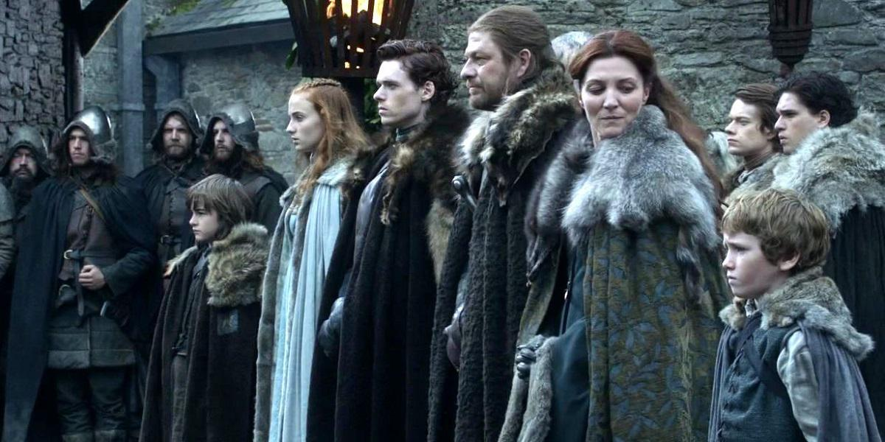
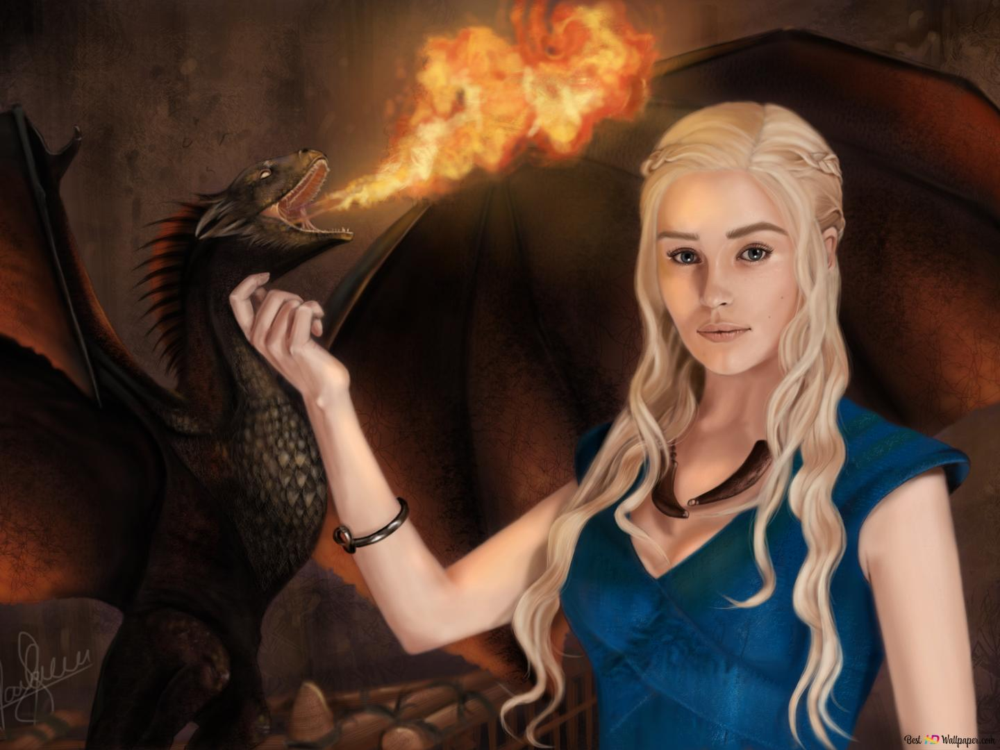
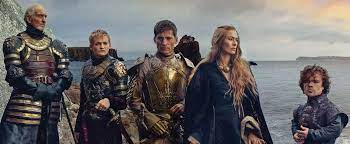
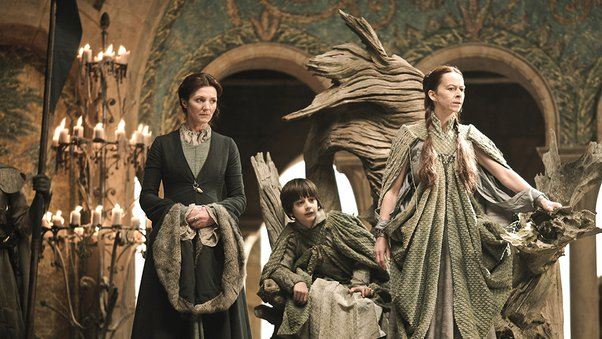
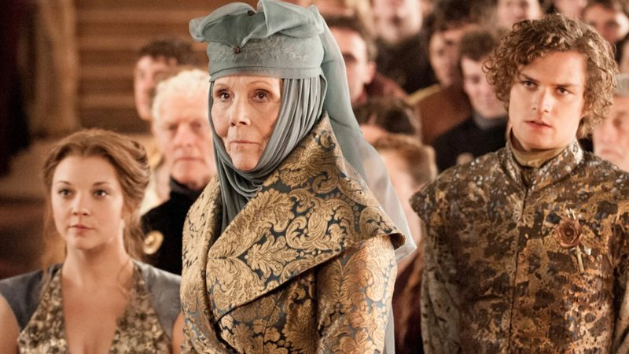
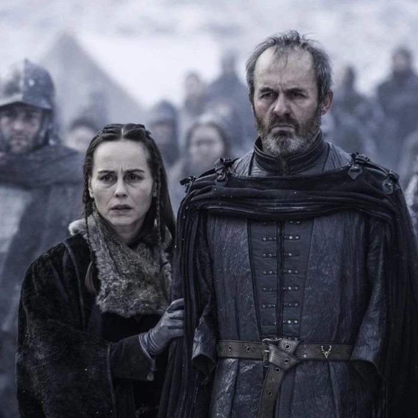
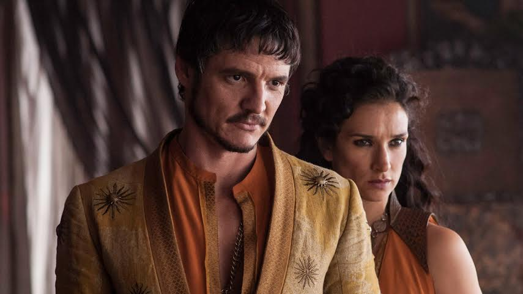
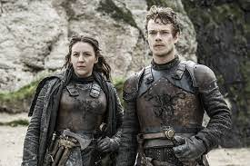
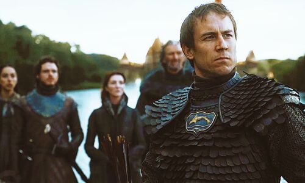

Explore as principais casas de Westeros
Game of Thrones apresenta um intricado mosaico de casas nobres,cada uma com suas histórias,
tradições e rivalidades. Desde os leões da Casa Lannister, conhecidos por sua riqueza e
ambição,até os lobos da Casa Stark, símbolos de lealdade e honra, passando pelos dragões da Casa
Targaryen, portadores de um legado de poder e fogo. Essas casas tecem uma teia de alianças e
conflitos que moldam o cenário político e social de Westeros, formando o núcleo da saga
épica.

Stark
Localizada em Winterfell, sua linhagem iniciou nos tempos antigos, junto aos Primeiros
Homens, onde eram independentes e comandavam o norte com seus Reis do Inverno. Após a
conquista de Aegon Targaryen, os Stark juraram lealdade e se juntaram ao recém-unificado
sete reinos, momento em que foram nomeados lordes de Winterfell e Guardiões do Norte.
Vários membros de sua geração possuem seus lobos gigantes e podem acessar seus sentimentos
através do olhar.

Targaryen
São descendentes de Valíria, uma cidade que foi misteriosamente destruída completamente.
Fizeram sua casa na Pedra do Dragão, onde permaneceram até que decidiram conquistar
Westeros. A Guerra da Conquista se iniciou com Aegon e suas irmãs esposas Visenya e
Rahenys invadindo Westeros montados em seus dragões. A implacável força dos dragões fez com que
todos os
reinos se curvassem aos Targaryen. Seu reinado durou 276 anos, até a Guerra
Civil dos Sete Reinos.

Lannister
Considerada uma das casas mais ricas de Westeros, os Lannister são os senhores das terras
ocidentais e os Guardiões do Oeste. Sua casa, Rochedo Casterly, é um palácio construído
sobre um enorme rochedo à beira mar, abundante em depósitos de ouro, fonte de toda a
riqueza da família. Um lema importante para esta casa é “Um Lannister sempre paga suas dívidas”, que
demonstra um lado vingativo e premeditado desta casa.

Arryn
A Casa Arryn do Ninho da Águia é uma das grandes casas dos Sete Reinos de Westeros. Ela
governou sobre o Vale por milênios, originalmente como os Reis da Montanha e do Vale e,
mais recentemente, como Senhores Supremos do Vale e Protetores do Leste sob os reis da Casa
Targaryen e os reis da Casa Baratheon.

Tyrell
Família guardiã do sul de Westeros, e a segunda mais rica dos sete reinos, perdendo apenas para os
Lannisters. Possuem o título de Sehor da Campina pois sua morada é no Jardim de Cima, nas margens do
rio
Mander.

Baratheon
Seu trono fica localizado em Ponta da Tempestade. Foi uma das famílias mais leais aos
Targaryen. Após Rhaegar, filho do filho do Rei Louco Aerys, sequestrar Lady Lyanna Stark
quando ela estava prometida ao seu amado, Robert Baratheon, iniciou-se a Guerra Civil
dos Sete Reinos. Robert se aliou aos Tullys, Starks e Arryns e tomou para si o Trono de
Ferro,se tornando o novo Rei de Westeros.

Martell
A Casa Martell de Lançassolar é uma Grande Casa de Westeros que governa a península de
Dorne, no extremo sul do continente, a partir de seu castelo Lançassolar. Os membros do
ramo principal da família recebem o título de Príncipe ou Princesa de Dorne, apesar de que
apenas o governante e cabeça da família recebe o título de Senhor ou Senhora de Lançassolar.

Greyjoy
São habilidosos guerreiros do mar. Seu trono fica no castelo de Pyke, de onde governam o
arquipélago das Ilhas de Ferro, que são cercados por mares tempestuosos. O lema da casa
é “Não semeamos”, que demonstra sua cultura de atacar e saquar o continente para conseguir
comida. O filho mais novo do Lord Balon Greyjoy, Theon Greyjoy, foi entregue à casa
Stark como garantia de lealdade após o pai realizar uma tentativa fracassada de de liderar uma
rebelião contra o rei Robert Baratheon.

Tully
A Casa Tully é uma antiga e nobre casa das Terras Fluviais, que remonta à Era dos Heróis. Ao
contrário de muitas grandes casas, nunca governaram como reis, mas seguraram Correrrio por
mil anos. A Casa Tully ganhou destaque durante a Guerra da Conquista, quando Lorde Edmyn
Tully anunciou os senhores rebeldes do rio que desertaram o Rei Harren, O Negro e se
juntaram a Aegon, o Conquistador. Edmyn foi recompensado com o domínio sobre as Terras
Fluviais. Durante a Dança dos Dragões, os Tully governaram em nome dos senhores do rio. Os
Tully não parecem ter tido um papel ativo na guerra civil, ao contrário de vassalos como os
Blackwood e os Frey.